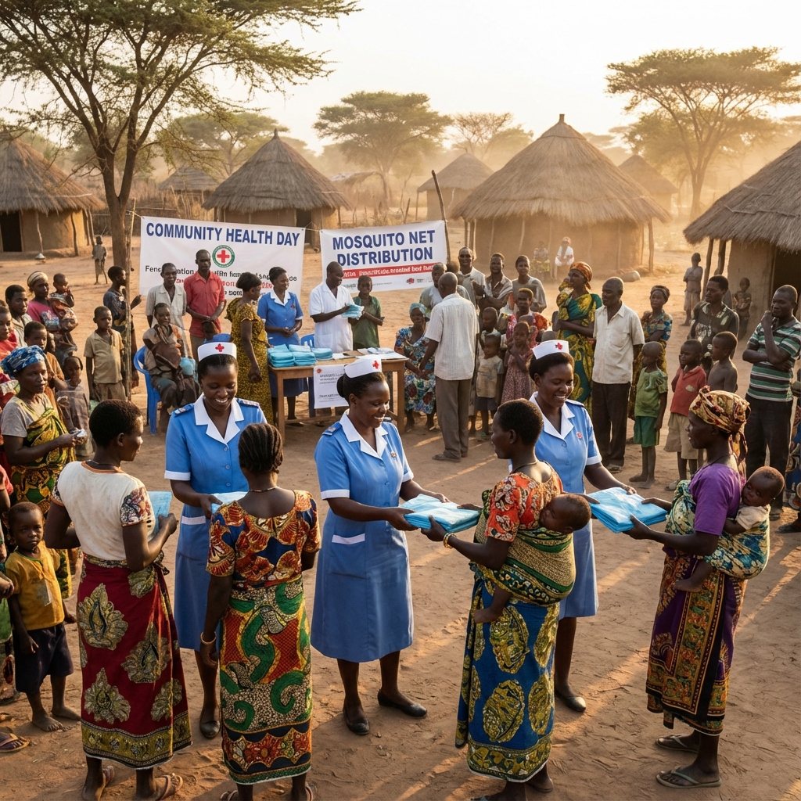

Inspiring Hope for Mothers & Newborns
Saving maternal and newborn healthcare through integrated clinical practice, education, and research in under-resourced communities.
Support Our MissionOur Core Pillars
We improve health and well-being through four key strategic areas.
Education
Providing training for community healthcare providers on critical maternal and newborn care practices.
Research
Conducting vital research to understand and address health disparities in vulnerable populations.
Advocacy
Championing the rights and health needs of mothers and newborns at local and global levels.
Empowerment
Empowering communities to take charge of their health through partnership and support.

Why We Exist
The BAWO Foundation was created by Dr. Inara A. Omuso, MD, and inspired by Dr. Aye Wilson Omuso, PhD. We are dedicated to providing healthcare services to under-resourced, marginalized, and vulnerable patient populations in the United States and sub-Saharan Africa.
Our mission is rooted in the legacy of Madam Bawo Wilson Omuso, a matriarch defined by generosity, love, and community commitment.
Learn About Our Legacy